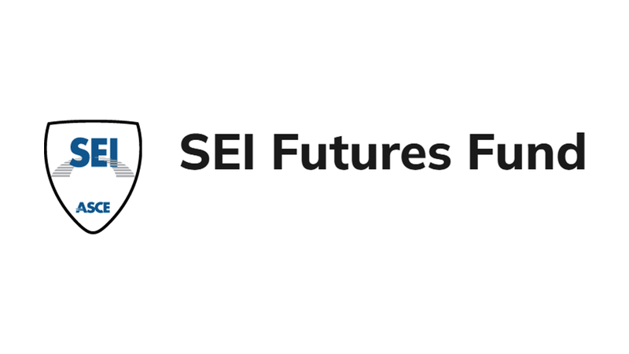
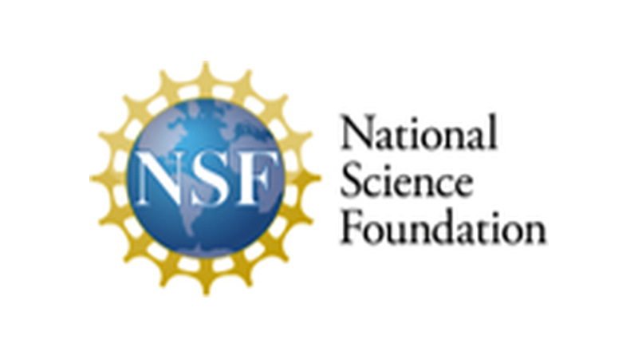
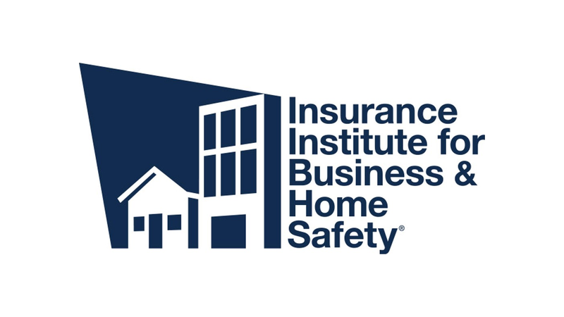

Oct 2026
Launched this website
A new home for my research, publications, and side thoughts.
News, milestones, awards, and moments worth sharing…
A new home for my research, publications, and side thoughts.
A time–frequency scaling framework for reproducing full-scale downbursts in wind tunnels and simulations.
Started as a Wind Engineer, applying wind tunnel testing in practice alongside my postdoctoral research.
3D-PIV characterization of downburst-like outflows at the Wall of Wind, with the University of Genoa.
Ph.D. in Civil and Environmental Engineering (Structural and Wind Engineering) at FIU, advised by Dr. Amal Elawady.
Awarded to attend the ASCE Structures Congress in Boston.
How partial damage changes the response of transmission towers to downburst winds.
A state-of-the-art review of how high-rise building façades perform under wind loading.
Spent the summer at the Insurance Institute for Business & Home Safety, seeing how research becomes mitigation practice.
Building–monopole coupling can magnify the forces at a rooftop monopole’s tip by up to 8.8 times.
A review of nondestructive testing techniques for assessing timber structures.
Joined the wind science group at the University of Genoa to analyze full-scale downburst field records.

2026 — ASCE Structures Congress, Boston.

2025 — NHERI Summer Institute for Early-Career Faculty, University of Texas at San Antonio; my mock proposal was selected as the best.

2025 — Insurance Institute for Business & Home Safety (IBHS), South Carolina.
Lattice towers are widely used as primary structural systems for transmission lines and telecommunications infrastructure in the United States and worldwide. Their widespread deployment increases their exposure and vulnerability to extreme wind events such as hurricanes, tornadoes, and downbursts. A Climate Central report noted that, in 2025, thunderstorms caused 67 fatalities and approximately $50.70 billion in economic losses in the United States. Accordingly, this study investigates the wind-induced response of lattice towers under downburst winds and compares it with that under atmospheric boundary layer (ABL) winds.
Downbursts can generate intense near-surface winds that impose substantial demands on the built environment. Their severity is especially critical for lattice towers, which are slender and flexible and therefore particularly vulnerable to such events. Understanding downburst effects on lattice towers is essential for identifying response characteristics distinct from those under ABL winds and for informing future design improvements. This can be pursued through field measurements, wind tunnel experiments, and numerical simulations. However, progress remains hampered by (i) the scarcity of field data capturing downburst-induced structural response, (ii) the transient nature of downbursts, which requires specialized simulation techniques and scaling approaches for wind tunnel testing, and (iii) the difficulty of conducting realistic vulnerability assessments.
To address these gaps, this study (1) investigates the wind-induced response of lattice towers under ABL and downburst winds through a field data collection campaign, (2) provides insights into experimentally simulated downburst-like outflows at the Wall of Wind Experimental Facility at Florida International University using 3D Particle Image Velocimetry (3D PIV), (3) proposes a generalized time-frequency scaling approach adaptable to existing wind tunnels, and (4) introduces, to the best of the authors’ knowledge, the first experimental approach for simulating a damaged lattice tower and examining its wind-induced response under downburst winds using a large-scale aeroelastic model.
Concisely, based on full-scale data, the results indicate the presence of vortex shedding that leads to excessive across-wind vibrations, compromising structural safety, although this phenomenon has not been discussed in the literature and receives limited attention in ASCE 74. Under downburst winds, the across-wind RMS acceleration is approximately 1.35 times that in the along-wind direction.